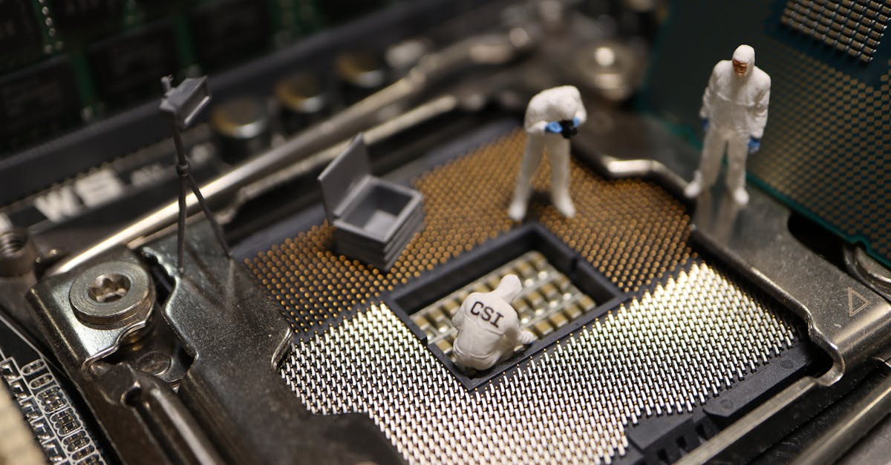

La Quête de l'Apaisement et la Volatilité des Marchés
Dans le ballet incessant des marchés financiers, où chaque nouvelle géopolitique peut provoquer des ondes de choc sismiques, l'annonce de JPMorgan Asset Management résonne comme une note d'espoir. Kerry Craig, stratège mondial principal chez JPMorgan, a récemment souligné que les marchés « tournent en rond dans une certaine mesure », mais que les investisseurs perçoivent désormais les développements au Moyen-Orient comme « pointant vers une porte de sortie du conflit ». Cette observation, relayée par Bloomberg Television, marque un pivot potentiel d'une importance capitale pour les actifs mondiaux, et en particulier pour les métaux précieux, traditionnellement perçus comme des havres de paix en période d'incertitude.
👉 À lire : Le Spectre de la Stagflation : L'Or Face aux Tensions Mondiales
Pendant des mois, voire des années, les tensions géopolitiques ont servi de toile de fond à des marchés souvent nerveux, poussant les investisseurs à privilégier la sécurité. L'or, en particulier, a vu sa demande augmenter à chaque flambée de violence ou à chaque menace d'escalade, illustrant son rôle séculaire de valeur refuge ultime. Mais si cette « porte de sortie » se concrétise, quel sera l'impact sur ces actifs ? La psychologie des marchés est une créature complexe, influencée par une myriade de facteurs allant des gros titres aux moindres frémissements des données économiques. La capacité à anticiper et à réagir à ces changements est la pierre angulaire d'une stratégie d'investissement réussie.
👉 À lire : IA : Le Nouvel Outil des Investisseurs en Métaux Précieux
Ce revirement de perception ne signifie pas que le conflit est résolu, mais plutôt que les marchés commencent à intégrer une probabilité accrue de désescalade, ou du moins une limitation de son impact global. Cela déplace le focus des investisseurs d'une approche macro-géopolitique réactive vers une analyse plus granulaire des fondamentaux économiques et microéconomiques. Pour les traders d'or et de métaux précieux, cette transition est cruciale. Elle signifie que les dynamiques de prix ne seront plus dictées principalement par la peur et l'incertitude, mais par des facteurs plus traditionnels tels que les taux d'intérêt, l'inflation, la force du dollar et, surtout, la santé des entreprises. C'est un changement de paradigme qui demande une agilité et une capacité d'analyse que seuls les outils les plus avancés peuvent offrir. Comment, dès lors, un Agent IA peut-il naviguer dans ces eaux mouvantes, où les signaux se brouillent et les priorités changent du jour au lendemain ?
L'Analyse de JPMorgan: Un “Off-Ramp” pour les Marchés
L'éclairage de Kerry Craig de JPMorgan Asset Management sur la perception d'un « off-ramp » ou d'une « porte de sortie » du conflit au Moyen-Orient est plus qu'une simple observation ; c'est un signal puissant de la part d'un acteur majeur des marchés. Lorsque Craig affirme que les marchés « tournent en rond », il décrit cette période d'incertitude prolongée où les cours des actifs réagissent de manière erratique aux nouvelles, sans direction claire, oscillant entre espoir et crainte. Cette volatilité, souvent alimentée par la spéculation et les rumeurs, a rendu le trading particulièrement ardu pour les investisseurs humains, soumis aux biais émotionnels et à la fatigue informationnelle.
Cependant, la nouvelle perspective d'une désescalade, même partielle ou progressive, change la donne. Elle suggère que les acteurs du marché, après avoir intégré le risque d'une expansion du conflit, commencent à envisager des scénarios moins extrêmes. Plusieurs facteurs peuvent contribuer à cette perception : des efforts diplomatiques discrets mais soutenus, une absence d'escalade majeure malgré les tensions, ou encore une certaine résilience économique mondiale qui tempère les craintes les plus sombres. Pour les investisseurs, cela signifie une diminution de la prime de risque géopolitique qui était intégrée dans de nombreux actifs, y compris l'or.
Historiquement, l'or a toujours servi de refuge. En période de conflit, d'instabilité politique ou de crise économique, les investisseurs se tournent vers le métal jaune pour préserver leur capital. Une désescalade, par conséquent, pourrait entraîner un certain désintérêt pour cette fonction de refuge, potentiellement conduisant à un rééquilibrage des portefeuilles. « Les marchés sont des bêtes complexes, mais ils ont une capacité étonnante à anticiper les virages, même les plus subtils », a commenté un analyste chevronné, soulignant que cette perception de « porte de sortie » n'est pas une prédiction de paix immédiate, mais une réévaluation des probabilités de risque.
Cette réévaluation est cruciale. Elle ne se manifeste pas uniquement par des mouvements de prix directs, mais aussi par un changement dans les corrélations entre les actifs. Les actifs qui étaient inversement corrélés aux risques géopolitiques pourraient voir cette relation s'affaiblir, tandis que d'autres facteurs reprendraient le devant de la scène. La capacité d'un système de trading, en particulier un basé sur l'IA, à détecter ces changements de corrélation en temps réel est un avantage concurrentiel majeur. Il ne s'agit plus seulement de réagir à la dernière nouvelle, mais de comprendre comment cette nouvelle modifie la structure sous-jacente du marché et les interdépendances entre les différentes classes d'actifs. C'est précisément là que la puissance de calcul et l'objectivité de l'intelligence artificielle trouvent toute leur pertinence, permettant une analyse nuancée et une adaptation stratégique rapide face à l'évolution des dynamiques du marché mondial.
Le Pivot vers les Fondamentaux Microéconomiques et la Saison des Résultats
Le basculement de l'attention des marchés des risques macro-géopolitiques vers les fondamentaux microéconomiques est un événement capital, d'autant plus qu'il coïncide avec le début de la saison des résultats aux États-Unis. Ce n'est pas un simple changement de sujet de conversation, mais une refonte des indicateurs clés qui guideront les décisions d'investissement. La saison des résultats est une période intense où les entreprises cotées en bourse publient leurs performances financières pour le trimestre écoulé. Ces rapports incluent les chiffres d'affaires, les bénéfices, les marges, et surtout, les perspectives pour les trimestres à venir.
Pourquoi est-ce si important ? Parce que la santé des entreprises est le moteur de l'économie réelle. Des bénéfices solides signalent une demande robuste, une gestion efficace et, in fine, une économie en croissance. À l'inverse, des résultats décevants peuvent indiquer des problèmes sous-jacents, qu'il s'agisse d'une demande faible, de pressions inflationnistes sur les coûts ou de défis concurrentiels. Lorsque les marchés se focalisent sur ces données, ils cherchent à évaluer la valeur intrinsèque des entreprises et, par extension, la direction générale de l'économie. Cela contraste fortement avec la réaction réflexe aux gros titres géopolitiques, qui tend à provoquer des mouvements de panique ou d'euphorie généralisés, souvent déconnectés des réalités économiques fondamentales.
Pour l'or et les métaux précieux, ce pivot a des implications complexes. Si les résultats d'entreprise sont globalement positifs et que les perspectives sont optimistes, cela pourrait renforcer la confiance des investisseurs dans les actifs plus risqués, comme les actions, et potentiellement réduire l'attrait de l'or en tant que valeur refuge. Une économie forte peut également entraîner un renforcement du dollar américain, ce qui, historiquement, exerce une pression à la baisse sur le prix de l'or, qui est libellé en dollars. Cependant, une forte croissance économique peut aussi raviver les craintes d'inflation, un scénario où l'or excelle traditionnellement comme protection contre la dépréciation monétaire.
« La saison des résultats est le moment où la réalité économique rattrape les spéculations. C'est là que les entreprises prouvent leur valeur, ou non. Pour les métaux précieux, c'est une période où les signaux peuvent être contradictoires, exigeant une analyse d'une finesse extrême. » – Dr. Élise Dubois, économiste des marchés.
La capacité d'un Agent IA à digérer et à interpréter ces milliers de rapports financiers, à identifier les tendances sectorielles, à évaluer l'impact des prévisions de croissance sur les différentes industries et à corréler ces informations avec les mouvements des prix de l'or et des autres métaux précieux est un atout inestimable. Là où un analyste humain passerait des semaines à éplucher des bilans, l'IA peut traiter cette montagne de données en quelques millisecondes, offrant une vision d'ensemble et des prévisions ajustées en temps réel. Cette agilité est cruciale pour capitaliser sur les opportunités ou minimiser les risques dans un environnement de marché en constante évolution.

L'Or, Baromètre Géopolitique et Économique: Une Danse Complexe
L'or, ce métal précieux qui fascine l'humanité depuis des millénaires, est bien plus qu'une simple marchandise ; c'est un véritable baromètre, capable de refléter à la fois les tempêtes géopolitiques et les courants économiques sous-jacents. Sa valeur ne réside pas seulement dans sa rareté ou son éclat, mais dans sa capacité unique à servir de refuge en temps de crise et de protection contre l'inflation. Cependant, avec la perception d'une désescalade au Moyen-Orient et le retour de l'attention sur les fondamentaux microéconomiques, l'or se trouve à un carrefour, sa danse complexe entre ces deux rôles étant plus prononcée que jamais.
Traditionnellement, l'or brille de son plus bel éclat lorsque l'incertitude règne. Les investisseurs, cherchant à se prémunir contre la volatilité des marchés boursiers ou la dépréciation des devises, se tournent vers lui. Une désescalade géopolitique, par nature, tend à réduire cette prime de risque. Si les craintes d'une expansion du conflit s'estompent, une partie de la demande d'or liée à son statut de valeur refuge pourrait s'évaporer, entraînant potentiellement une correction des prix. Mais la situation est rarement aussi simple.
Parallèlement, le pivot vers les fondamentaux microéconomiques introduit de nouvelles variables. Si la saison des résultats révèle une économie robuste avec de fortes croissances des bénéfices, cela pourrait renforcer le dollar américain, ce qui, comme mentionné, a tendance à exercer une pression à la baisse sur l'or. À l'inverse, si ces mêmes résultats, combinés à d'autres indicateurs économiques, signalent une inflation persistante ou en hausse, alors l'or pourrait retrouver son attrait en tant que couverture contre la perte de pouvoir d'achat. C'est un équilibre délicat, où le prix de l'or est tiré dans différentes directions par des forces contraires.
- Facteurs haussiers potentiels : craintes d'inflation persistante, politiques monétaires accommodantes à long terme, demande des banques centrales, demande industrielle pour certains métaux précieux.
- Facteurs baissiers potentiels : désescalade géopolitique, renforcement du dollar, hausse des taux d'intérêt réels, regain d'appétit pour le risque dans les actions.
« L'or est le grand équilibriste des marchés. Comprendre son mouvement exige de jongler avec les données géopolitiques, monétaires et économiques avec une précision chirurgicale », a observé un trader chevronné. Pour les métaux précieux, notamment l'argent, le platine et le palladium, les dynamiques sont encore plus complexes, car ils sont aussi fortement influencés par la demande industrielle. Une économie mondiale en croissance stimule la production automobile, l'électronique et d'autres secteurs gourmands en métaux, ce qui peut soutenir leurs prix, indépendamment des tensions géopolitiques.
Dans ce contexte de signaux contradictoires, la capacité d'un Agent IA à analyser simultanément des milliers de points de données, à identifier les corrélations changeantes et à pondérer l'importance relative de chaque facteur est un avantage inestimable. Il ne s'agit pas seulement de réagir à un événement, mais de comprendre le réseau complexe d'influences qui façonnent la valeur des métaux précieux, permettant ainsi des décisions de trading plus informées et moins émotionnelles.
L'Intelligence Artificielle: Le Compas dans la Tempête des Données
Face à la complexité croissante des marchés, où les signaux géopolitiques se mêlent aux fondamentaux économiques, l'intelligence artificielle n'est plus un simple outil, mais un véritable compas pour naviguer dans la tempête des données. La capacité de l'IA à traiter et à analyser des volumes massifs d'informations à une vitesse surhumaine la rend indispensable pour les traders d'or et de métaux précieux. Là où un être humain se noierait dans un déluge de rapports, de discours de banquiers centraux, de tweets politiques et de données macroéconomiques, l'Agent IA de GoldTrade AI excelle, transformant le chaos en informations exploitables.
Considérons le scénario actuel : une désescalade potentielle au Moyen-Orient couplée au début de la saison des résultats aux États-Unis. Un trader humain devrait jongler avec :
- Les dernières nouvelles diplomatiques et militaires.
- Les résultats financiers de centaines d'entreprises.
- Les commentaires des dirigeants sur les perspectives futures.
- Les indicateurs économiques (inflation, chômage, PIB).
- Les déclarations des banques centrales sur les taux d'intérêt.
- Les mouvements des devises, en particulier le dollar.
Chaque élément a un poids différent et interagit avec les autres de manière non linéaire. C'est précisément dans cette complexité que la supériorité de l'IA se manifeste. Nos algorithmes sont entraînés sur des décennies de données de marché, apprenant à identifier des motifs subtils et des corrélations que l'œil humain pourrait facilement manquer. L'IA ne se contente pas de lire les données ; elle les interprète, les contextualise et les utilise pour construire des modèles prédictifs sophistiqués.
« L'IA n'élimine pas l'incertitude, elle la quantifie. Elle ne supprime pas le risque, elle le gère avec une précision inégalée en identifiant les facteurs les plus influents à un instant T. C'est une révolution pour le trading des matières premières. » – Prof. Marc Fournier, spécialiste en apprentissage automatique.
Un Agent IA peut par exemple, en quelques millisecondes, analyser l'impact potentiel d'un discours de la Réserve fédérale sur les attentes d'inflation, puis simultanément croiser cette information avec les derniers résultats d'une grande entreprise technologique et les fluctuations du prix du pétrole. Cette analyse multicritères et multi-factorielle est la clé pour comprendre les mouvements complexes de l'or et des métaux précieux. Elle permet de distinguer un mouvement de prix lié à une panique géopolitique passagère d'un mouvement plus fondamental lié à une réévaluation des perspectives économiques.
De plus, l'IA opère sans émotion. La peur et la cupidité, moteurs puissants des décisions humaines, sont absentes de son processus. Cela garantit une exécution des trades basée uniquement sur la logique et les données, minimisant les erreurs coûteuses dues aux réactions impulsives. En offrant une analyse objective et une exécution rigoureuse 24h/24, l'intelligence artificielle devient le compas indispensable pour tout investisseur souhaitant naviguer avec succès dans les eaux agitées des marchés des métaux précieux, en capitalisant sur chaque opportunité et en se protégeant contre les risques latents.

Adaptabilité et Réactivité: L'Avantage Décisif de l'IA pour l'Or
L'une des qualités les plus précieuses de l'Intelligence Artificielle dans le trading est son extraordinaire adaptabilité et sa réactivité. Dans un environnement où les marchés peuvent pivoter en quelques heures, voire quelques minutes, la capacité de modifier rapidement les stratégies est un avantage décisif. Le scénario actuel, avec le passage des préoccupations géopolitiques aux fondamentaux microéconomiques, illustre parfaitement ce besoin. Un trader humain, même le plus aguerri, aura du mal à désapprendre rapidement des réflexes développés pendant des mois d'incertitude géopolitique pour se concentrer sur les nuances des rapports d'entreprise.
L'Agent IA de GoldTrade AI, en revanche, est conçu pour l'adaptation. Ses algorithmes d'apprentissage automatique sont constamment alimentés par de nouvelles données, ce qui lui permet de mettre à jour ses modèles en temps réel. Si la prime de risque géopolitique sur l'or diminue, l'IA ne va pas simplement vendre ; elle va réévaluer l'importance relative des autres facteurs qui influencent le prix de l'or. Par exemple, elle pourrait accorder plus de poids aux données sur l'inflation, aux décisions des banques centrales concernant les taux d'intérêt, ou même à la demande industrielle pour l'argent ou le platine, si ces métaux sont concernés. Cette capacité à changer de perspective et à ajuster ses pondérations est fondamentale.
Imaginez un instant : les marchés anticipent une baisse des taux d'intérêt, ce qui serait généralement positif pour l'or. Mais simultanément, les résultats d'entreprise sont exceptionnellement bons, renforçant le dollar et l'appétit pour le risque. Un humain pourrait être paralysé par ces signaux contradictoires. L'IA, elle, analyse la force de chaque signal, leur corrélation historique et leur impact probabiliste sur le prix de l'or, puis exécute le trade optimal. Elle ne se contente pas de réagir, elle anticipe les réactions du marché à la confluence de ces informations.
« L'agilité de l'IA surpasse de loin celle de l'esprit humain. Elle ne s'attache pas à une stratégie passée ; elle évolue avec le marché, apprenant en permanence. C'est l'essence même de la performance dans le trading à haute fréquence. » – Dr. Sophie Bertrand, chercheuse en IA appliquée à la finance.
De plus, l'Agent IA opère 24 heures sur 24, 7 jours sur 7. Les marchés des métaux précieux sont mondiaux et ne dorment jamais. Une nouvelle importante peut tomber à n'importe quelle heure, en dehors des heures de bureau traditionnelles. Là où un humain serait endormi ou distrait, l'IA continue de surveiller, d'analyser et, si nécessaire, d'exécuter des transactions. Cette vigilance constante est cruciale pour capturer les mouvements de prix éphémères et pour protéger le capital contre des retournements soudains. Elle assure que les opportunités ne sont jamais manquées et que les risques sont gérés avec une diligence ininterrompue.
En somme, l'adaptabilité et la réactivité de l'IA ne sont pas de simples caractéristiques, mais des piliers fondamentaux qui confèrent un avantage décisif. Elles permettent non seulement de survivre, mais de prospérer dans un environnement de marché en mutation rapide, en s'assurant que les stratégies de trading de l'or et des métaux précieux sont toujours alignées avec les réalités les plus récentes et les plus pertinentes.
Au-delà des Titres: Anticiper les Tendances de Fond avec l'IA
Si la désescalade au Moyen-Orient et la saison des résultats américains dominent l'actualité à court terme, un investisseur avisé sait que les véritables richesses se construisent en anticipant les tendances de fond. Les gros titres créent de la volatilité, mais ce sont les courants économiques, démographiques et technologiques sous-jacents qui dictent la direction à long terme des marchés. Pour l'or et les métaux précieux, cette perspective est d'autant plus pertinente que leur rôle transcende les cycles économiques et les soubresauts géopolitiques immédiats.
Même si les tensions géopolitiques s'apaisent, d'autres facteurs structurels continueront d'influencer le prix de l'or. Par exemple, l'inflation reste une préoccupation majeure pour de nombreuses économies mondiales. Les politiques monétaires des banques centrales, la croissance de la masse monétaire, et les déficits budgétaires persistants sont autant de catalyseurs potentiels pour l'or en tant que protection contre la dépréciation monétaire. L'IA excelle à analyser ces macro-tendances, à identifier les signaux faibles qui pourraient indiquer une pression inflationniste future, et à ajuster les stratégies de trading en conséquence.
De même, la demande des banques centrales pour l'or a été un facteur de soutien significatif ces dernières années. Alors que les pays cherchent à diversifier leurs réserves de change et à réduire leur dépendance vis-à-vis du dollar, l'or redevient un actif de choix. L'Agent IA peut surveiller les rapports des banques centrales, les données sur les réserves d'or et les politiques monétaires pour anticiper les mouvements futurs de cette demande institutionnelle, qui a un impact considérable sur le marché physique et les prix.
- Analyse des politiques monétaires : Impact des taux d'intérêt réels sur l'or.
- Surveillance de l'inflation : L'or comme couverture contre la dépréciation monétaire.
- Demande des banques centrales : Diversification des réserves de change mondiales.
- Croissance économique mondiale : Influence sur la demande industrielle des métaux précieux (argent, platine, palladium).
« L'IA ne se contente pas de voir l'arbre, elle cartographie la forêt entière, identifiant les racines profondes des mouvements de marché qui échappent souvent à l'analyse humaine », a affirmé un expert en modélisation quantitative. Pour les autres métaux précieux comme l'argent, le platine et le palladium, les tendances de fond sont également cruciales. La transition énergétique, avec la demande croissante pour les véhicules électriques et les catalyseurs, crée de nouvelles opportunités. L'IA peut analyser les rapports de l'industrie automobile, les brevets technologiques et les politiques environnementales pour prévoir la demande future de ces métaux, bien au-delà des fluctuations quotidiennes.
En permettant d'aller au-delà des bruits de court terme et de se concentrer sur les moteurs structurels du marché, l'intelligence artificielle offre aux investisseurs une capacité inégalée à construire des stratégies robustes et résilientes. Elle transforme le trading de l'or et des métaux précieux d'une série de réactions à des événements en une approche proactive, fondée sur une compréhension approfondie des dynamiques qui façonneront les marchés de demain. C'est ainsi que l'IA ne se contente pas de faciliter le trading, mais redéfinit la manière dont nous appréhendons et exploitons la valeur intrinsèque de ces actifs millénaires.
Conclusion: Vers un Nouveau Paradigme du Trading de l'Or
La nouvelle selon laquelle les marchés perçoivent une « porte de sortie » du conflit au Moyen-Orient, conjuguée au retour d'attention sur les fondamentaux microéconomiques et la saison des résultats, marque un tournant significatif. Ce pivot exige des investisseurs une agilité et une capacité d'analyse sans précédent. L'or et les métaux précieux, qui ont joué leur rôle de valeur refuge face à l'incertitude géopolitique, se retrouvent désormais à naviguer dans un environnement où leur valeur sera de plus en plus dictée par des dynamiques économiques complexes et des tendances de fond.
Dans ce nouveau paradigme, l'intelligence artificielle ne se positionne pas comme un simple auxiliaire, mais comme un acteur indispensable. Sa capacité à digérer et à interpréter des volumes massifs de données – qu'il s'agisse des rapports d'entreprise, des déclarations des banques centrales, des indicateurs d'inflation ou des moindres frémissements géopolitiques – dépasse de loin les capacités humaines. L'IA offre une vision holistique et objective, permettant d'identifier les signaux faibles, de pondérer les facteurs contradictoires et d'adapter les stratégies en temps réel, 24 heures sur 24, 7 jours sur 7.
L'Agent IA, tel que développé par GoldTrade AI, représente l'avant-garde de cette révolution. Il ne se contente pas de réagir aux événements ; il anticipe les mouvements, gère les risques avec une précision chirurgicale et exploite les opportunités avec une efficacité inégalée. En éliminant les biais émotionnels et en fournissant une analyse basée uniquement sur les données, il offre aux investisseurs la tranquillité d'esprit et la performance qu'ils recherchent dans un monde financier de plus en plus complexe.
L'avenir du trading de l'or et des métaux précieux est intrinsèquement lié à l'innovation technologique. Les jours où les décisions étaient uniquement basées sur l'intuition ou la lecture rapide des gros titres sont révolus. Nous entrons dans une ère où la sophistication de l'analyse et la rapidité d'exécution, rendues possibles par l'intelligence artificielle, sont les véritables clés du succès. En choisissant de s'appuyer sur un Agent IA, les investisseurs ne se contentent pas d'adopter une technologie ; ils embrassent un nouveau modèle de trading, plus intelligent, plus réactif et, en fin de compte, plus rentable pour l'investissement dans l'or et les métaux précieux.